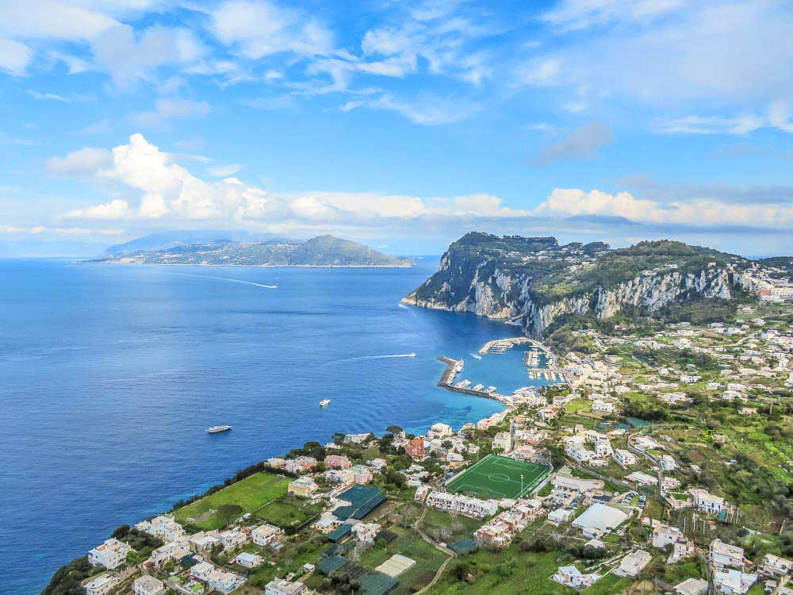

Sempre ouvi falar em Capri, principalmente por ser um destino famoso entre celebridades, mas confesso que, se calhar por essa mesma razão, nunca despertou muito o meu interesse. Até que percebi que a ilha fica a uma curta viagem de barco desde Sorrento. E, já que estava ali, parecia-me um desperdício não a ir conhecer. E fiz muito bem! :) Para além da actividade de ver e ser visto entre os famosos, Capri tem um pouco de tudo. Beleza natural e vistas de tirar o fôlego, comida óptima e restaurantes de topo, lojas de marcas internacionais… e uma cor de água de um azul inacreditável! A ilha tem duas cidades, não faça confusão: Capri e Anacapri (cujo significado no antigo idioma Grego é “acima de Capri”- está mais elevada). O ferry chega à Marina Grande. Daí, pode apanhar um funicular até à Piazzeta de Capri ou subir directamente para o centro histórico de Anacapri, onde se apanha o teleférico (na realidade é uma telecadeira aberta) para o topo do Monte Solaro. Depois de aproveitar as vistas e tirar dezenas de fotos, desça novamente para Anacapri e passeie pelas suas ruelas e praças.
Capri